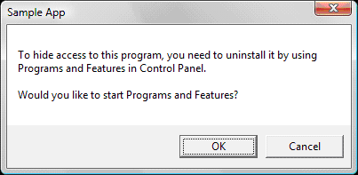

description: This topic provides independent software vendors (ISVs) with a quick guide to the steps necessary to register and manage application defaults in Windows Vista and later. Links are provided to more in-depth articles about each section's topic.
ms.assetid: 649eb20d-07d3-4209-abff-45fc50f05631
title: Managing Default Applications
ms.topic: article
ms.date: 05/31/2018
Managing Default Applications
The Set Program Access and Computer Defaults (SPAD) feature was added to Windows XP and later versions of Windows to manage per-computer defaults. In addition to SPAD, Windows Vista introduced the concept of per-user default applications and the Default Programs item in Control Panel.
[!IMPORTANT]
This topic does not apply for Windows 10. The way that default file associations work changed in Windows 10. For more information, see the section on Changes to how Windows 10 handles default apps in this post.
Â
Per-user default settings are specific to an individual user account on the system. If per-user default settings are present, they take precedence over corresponding per-computer defaults for that account. As of Windows 8, the extensibility system for file type and protocol defaults is strictly per-user and per-computer defaults are ignored. SPAD also changed in Windows 8 to set per-user defaults.
- On systems running versions of Windows earlier than Windows 8, a newly created user account receives per-computer defaults until per-user defaults are established. In Windows Vista and later, users can use the Default Programs item in Control Panel to set or change their per-user defaults. In addition, when an application is run for the first time, per-user defaults can be set using the guidelines that follow in the Application First Run and Defaults section.
- On systems running Windows 8, a newly created user account relies on per-user defaults from the start and the setting of those defaults on first run as explained in the Application First Run and Defaults section is no longer supported.
An application must register with both SPAD and the Default Programs feature to be offered as the default program in Windows Vista and later.
This topic provides independent software vendors (ISVs) with a quick guide to the steps necessary to register and manage application defaults in Windows Vista and later. Links are provided to more in-depth articles about each section's topic.
Default Programs Item in Control Panel
Default Programs is a feature introduced in Windows Vista, accessible directly from the Start menu as well as Control Panel. It provides a new infrastructure that works with standard user privilege (not elevated) and is designed to enable users and applications to manage per-user defaults. For users, Default Programs provides a unified and easily accessible way to manage defaults, file associations, and Autoplay settings across all applications on the system. For applications, using the per-user scope provided by the Default Programs APIs offers the following advantages:
-
No Elevation
An application does not have to elevate its privileges to claim defaults.
-
Good Citizenship
On a multiple-user computer, each user can select different default applications.
-
Default Management
Default Programs APIs offer a reliable and consistent mechanism for self-checking the default status and reclaiming lost settings without resorting to writing directly to the registry. However, as of Windows 8, we do not recommended that applications query the default status because an application can no longer change the default settings—those changes can be made only by the user.
To enable your application to manage defaults effectively, you must register your application as a potential default program. For details on registering and using the Default Programs APIs, see Default Programs.
Default Programs also provides these two features:
-
Reusable Defaults UI
The UI of both the program defaults (Set your default programs) and file associations (Associate a file type or protocol with a program) can be reused and called from within an application. This enables applications to provide a standard user experience for managing defaults and saves ISVs from having to develop a custom or equivalent UI.
-
Inclusion of URL and Marketing Information
As part of the Set your default programs page of the Default Programs item in Control Panel, an application can provide marketing information and a link to the vendor's website. This URL is derived from the Authenticode certificate that the application has been signed with. This prevents misuse and unauthorized replacement of this link. If an application has an Authenticode certificate that includes an embedded URL, Windows UI displays that embedded URL. ISVs should take advantage of this feature to direct users to their website for updates and other downloads.
Set Program Access and Computer Defaults
Set Program Access and Computer Defaults (SPAD) enables administrators to manage computer-wide defaults that are inherited by all new users of that computer. Prior to Windows 8, SPAD also enabled administrators to repair file associations should they become broken when programs were removed from the system. However, as of Windows 8, SPAD affects only user-specific defaults.
For more information on registering an application in SPAD, see Working with Set Program Access and Computer Defaults (SPAD) and Registering Programs with Client Types. Specific changes and new recommendations are discussed in the sections that follow.
Setting Defaults in SPAD
Per-user defaults override per-computer defaults.
- Before Windows 8: Defaults set in SPAD (which are per-computer) will not be seen by users if corresponding per-user defaults are set. If a user has not set a per-user default, the system uses the corresponding computer default. New user accounts on a computer initially inherit the computer defaults. The first time a user runs an application, the application should prompt the user to assign their per-user defaults. See Application First Run and Defaults.
- As of Windows 8: All defaults are per-user and any per-computer default setting is ignored. Applications can no longer set default choices, so they cannot walk the user through their assigning of those defaults.
When a pre-Windows 8 application implements Set as Default in SPAD, these guidelines should be followed:
- Applications should claim only computer-level defaults through SPAD.
- Applications should not claim per-user defaults through SPAD.
When a Windows 8 application implements Set as Default in SPAD, they must register their file types and protocols in Default Programs, using the same application name used in SPAD. This allows a change in SPAD to reflect as a change in the corresponding Default Programs entry for the current user.
Hide Access in SPAD
The hide access option for each possible default in SPAD is accessed in one of two ways:
- Choose the Non-Microsoft category of defaults, which removes access to all Microsoft defaults.
- Choose the Custom category and clear the Enable access to this program check box.
Previously, taking either of those actions removed all entry points to the appropriate applications on the system. Specific guidelines for this situation say to remove shortcuts and icons from the following locations:
- Desktop
- Start menu
- Quick Launch bar (Windows Vista and earlier only)
- Notification area
- Shortcut menus
- Folder task band
Vendors are encouraged to implement these guidelines in the application's Hide Access callback function.
Alternate Hide Access Method in SPAD
For some legacy applications, a full implementation of Hide Access may not be practical. An alternate method that achieves the same effect, but is not easily reversible by the user, is to uninstall the application. The following shows sample behavior and example code to implement this.
The recommended user experience for this alternative is as follows:
-
When the user clears the Enable access to this program box in SPAD, the following UI is presented.

-
When the user clicks OK, the Programs and Features item in Control Panel is displayed so that the user can uninstall the application.
-
Windows XP users should be presented with the following dialog box.

-
When the Windows XP user clicks OK, the Add or Remove Programs item in Control Panel is displayed so that the user can uninstall the application.
The following code provides a reusable implementation for the Hide Access feature as outlined previously. It can be used on Windows XP, Windows Vista, and Windows 7.
#include <windows.h>
#include <shlwapi.h>
#include <strsafe.h>
PCWSTR c_pszMessage1 = L"To hide access to this program, you need to uninstall it by ";
PCWSTR c_pszMessage2 = L"using\n%s in Control Panel.\n\nWould you like to start %s?";
PCWSTR c_pszApplicationName = L"Sample App";
int _tmain(int argc, WCHAR* argv[])
{
OSVERSIONINFO version;
version.dwOSVersionInfoSize = sizeof(version);
if (GetVersionEx(&version))
{
PCWSTR pszCPLName = NULL;
if (version.dwMajorVersion >= 6)
{
// Windows Vista and later
pszCPLName = L"Programs and Features";
}
else if (version.dwMajorVersion == 5 &&
version.dwMinorVersion == 1)
{
// XP
pszCPLName = L"Add/Remove Programs";
}
if (pszCPLName != NULL)
{
WCHAR szMessage[256], szScratch[256];
if (SUCCEEDED(StringCchPrintf(szScratch,
ARRAYSIZE(szScratch),
c_pszMessage2,
pszCPLName,
pszCPLName)))
{
if (SUCCEEDED(StringCchCopy(szMessage,
ARRAYSIZE(szMessage),
c_pszMessage1)))
{
if (SUCCEEDED(StringCchCat(szMessage,
ARRAYSIZE(szMessage),
szScratch)))
{
if (IDOK == MessageBox(NULL,
szMessage,
c_pszApplicationName,
MB_OKCANCEL))
{
ShellExecute(NULL,
NULL,
L"appwiz.cpl",
NULL,
NULL,
SW_SHOWNORMAL);
}
}
}
}
}
}
return 0;
}
Registering for Application Entry Points
An application can have many entry points within the operating system. The following are recommended locations for entry points:
- Desktop
- Start menu
- Quick Launch bar (Windows Vista and earlier only)
- Notification area
- Shortcut menus
- Folder task band
This section focuses on these specific areas:
Open With
The Open With shortcut menu enables the user to select an application that can handle a specific file type. While Open With can be used to open a file with an application one time, it can also be used to set the default for that file name extension. Therefore, an application should always register for Open With so that users are presented with that application as a choice. Applications can register both file types and protocols for Open With. Applications that register protocols in the Default Programs framework are automatically added to the Open With options for protocols.
For information on registering for Open With, see Introduction to File Associations.
Start Menu and Quick Launch Bar
To become more discoverable to the user, applications can add shortcuts to various locations in Windows. The most common place to add a shortcut is the Start menu. In Windows Vista and later, an application creates a shortcut in the hidden folder %ProgramData%\Microsoft\Windows\Start Menu\Programs to appear in the Start menu's list of programs for all users. Commonly, an application adds a subfolder that contains the shortcut.
For browser and email programs, the Windows Vista Start menu also presents two dedicated links outside of the program list, canonically titled Internet and E-mail. After an application registers for those categories, the Default Programs framework can manage what is launched through those links.
[!Note]
The Internet and E-mail dedicated Start menu links are no longer present as of Windows 7.
Â
To further increase discoverability, applications can also add shortcuts to the desktop and the Quick Launch bar. Applications should ask the user for permission (usually during installation or on first run) before adding an icon to the Start menu, desktop, or Quick Launch bar.
[!Note]
The Quick Launch bar is no longer available as of Windows 7. The Windows 7 alternative is to have the application pinned to the Taskbar, but pinning cannot be done programmatically as it is strictly a user choice.
Â
For more information, see these topics:
Application Installation and Defaults
Application installation procedures have not fundamentally changed since Windows XP, with the exception of a new guideline for systems running versions of Windows older than Windows 8: take per-computer defaults at installation time but do not set any per-user defaults until that user first runs the application. (See Application First Run and Defaults.) Applications should not set per-user defaults during installation because there are situations in which the person installing the application is not the intended user. As of Windows 8, per-computer defaults are not supported and applications cannot change per-user default settings.
During installation, an application should copy its binaries to the hard disk and write its ProgIDs to the registry. The application should also register for Default Programs and Open With at this time for every file association it is a candidate to handle. The application can use the OpenWithProgIds subkey to register with Open With.
For more information, see these topics:
Application Upgrades and Defaults
Many applications have the ability to upgrade themselves over time. This upgrade procedure should not change the state of per-user defaults because that change would be unexpected to the user. However, it is acceptable for an application to check computer-level file associations and repair them if they have been corrupted.
Application First Run and Defaults
[!Note]
As of Windows 8, the system handles this procedure on behalf of all applications. Applications themselves can no longer query and change defaults. Only the user can do that. Therefore, applications should not attempt to query for the current default or change that default through any mechanism. However, applications can provide an entry point to Default Programs in the Control Panel by calling the LaunchAdvancedAssociationUI method of the IApplicationAssociationRegistrationUI interface.
Â
With the introduction of per-user defaults in Windows Vista, it is important that applications that contest for popular file name extensions all provide a common user experience to claim these extensions. Because these defaults are now set in the context of the user, they should present themselves as a default possibility only when the user runs the program after installation.
The guideline for establishing per-user defaults is this: When an application is first run for a specific user, that application should request user preferences for defaults and file associations for itself.
The recommended UI should provide two clear choices to the user:
- Accept all defaults that the application would like to claim. This option might also set other default properties of the application such as privacy or automatic update settings. This option allows the application to claim all of its registered defaults.
- Customize by accepting or not accepting default selections and program settings individually. This option presents further UI that enables the user to make granular choices for their default options.
For more information, see Default Programs.
Verifying Defaults and Asking for User Consent
[!Note]
This is not supported as of Windows 8.
Â
After an application registers with Default Programs in Windows Vista and later, certain APIs become available to the application. For instance, an application might need to check whether it is the default program. The IApplicationAssociationRegistration interface provides methods to do this.
Any application that wants to claim defaults must first ask the user and never claim defaults without permission. The user should be asked whether they want to make the application the default or leave the current default in place. There should also be an option not to be asked this question again after the user has made their choice.
For more information, see Default Programs.
Application Compatibility Tips
This section provides some application compatibility tips related to the Default Programs experience in Windows.
Avoid Triggering Per-User Virtualization
With the user account control (UAC) environment, applications should always run with only standard user rights for the best customer experience. For security reasons, applications with a standard user privilege level are blocked from writing to certain parts of the registry and to certain system files. Windows Vista and later versions of Windows provide a temporary application compatibility (AppCompat) layer to help applications make the transition. Blocked attempts to write to the registry or to system files are "virtualized" so that the application continues to run, but the sensitive areas of the system are not altered. However, applications should not rely on the AppCompat technology as a long-term solution. Instead, applications should use the many available tools to verify that they can run successfully under standard user rights. Some reprogramming of the application might be required to accomplish this, but it should be done in the interest of long-term compatibility.
Avoid AppCompat Warnings or Blocks from the Program Compatibility Assistant
The Program Compatibility Assistant (PCA) is provided in Windows Vista and later. Its purpose is to provide an automated method to make older programs with compatibility issues work better. The PCA monitors programs for known issues. If an issue is detected, it notifies the user of the problem and offers to apply effective solutions before the user runs the program again. To avoid seeing these warnings or blocks, ISVs should use the many available tools to ensure that their applications are compatible with Windows Vista, Windows 7, and later.
Support for Previous Windows Operating System Versions
The Default Programs infrastructure is not available on any Windows operating system before Windows Vista. Therefore, when applications move to the new Default Programs infrastructure, they should retain their older application-defaults code to maintain compatibility with older versions of Windows. An application should run an operating system version check as part of its installation to determine which application-defaults code to run.
To support an upgrade from Windows XP to Windows Vista or later, applications should add all the registry entries required for Default Programs even when they are installing on a computer running Windows XP. The registration will have no effect on a computer running Windows XP, but if the computer is later upgraded, the application will be already registered and able to take advantage of the framework.
For more information, see OSVERSIONINFO.
Additional Resources
Related topics
Best Practices for File Associations
File Association Sample Scenario
Default Programs
Working with Set Program Access and Computer Defaults (SPAD)
Â
Â